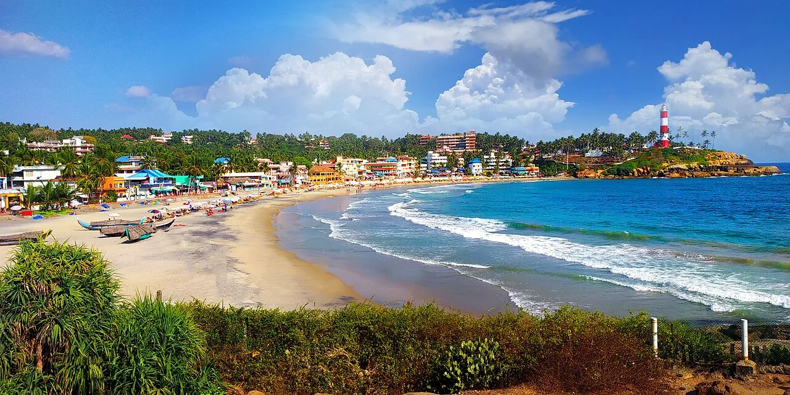

Lighthouse Beach — Kovalam
Kerala, Inde · baignade, surf, bodyboard

La plus grande et la plus animée des trois plages de Kovalam, au sud, près du phare de Vizhinjam. Le Routard note que des écoles proposent des initiations au surf et au bodyboard, et que les baies aux eaux calmes se prêtent à la baignade. Selon Wikivoyage, les eaux peu profondes et les petites vagues attirent beaucoup de voyageurs occidentaux.
- Lieu
- Kerala, Inde
- Niveau
- Variable selon les conditions
- Activités
- baignade, surf, bodyboard
- Type d'eau
- Mer / océan
- Coordonnées
- 8.39, 76.98 (position approximative du secteur)
Dangers à connaître
- Les courants peuvent être dangereux à Kovalam (Routard).
- Lighthouse Beach est la plage la plus populaire de Kovalam : prévois du monde (Routard).
- La mousson, de juin à septembre, limite certaines activités nautiques : la période idéale va de septembre à mars (Routard).
Le conseil d'Ocean Buddy
Le surf et le bodyboard dépendent beaucoup de l’état de la mer et de la saison : demande aux écoles locales avant de te lancer. Pour plus de calme, le Routard préfère Eve’s Beach et Ashok Beach.
Ouvrir dans Ocean Buddy Télécharger sur l'App Store
Source : Fiche Ocean Buddy · décembre 2026 · d’après le Routard, Wikipédia et Wikivoyage · à vérifier localement.